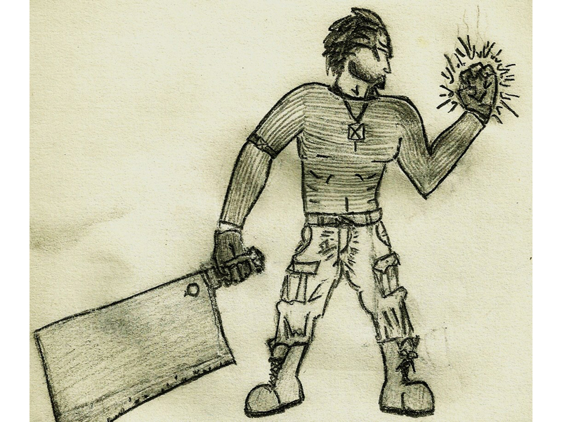
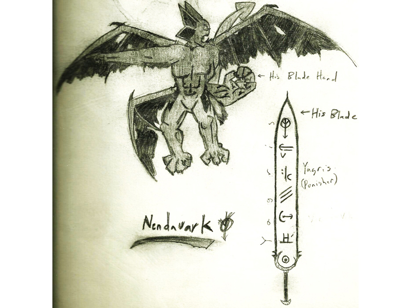
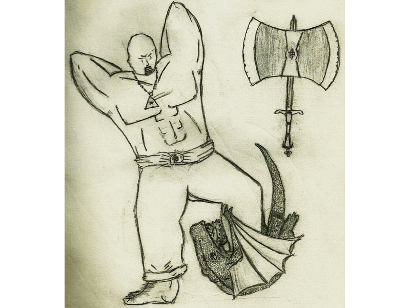
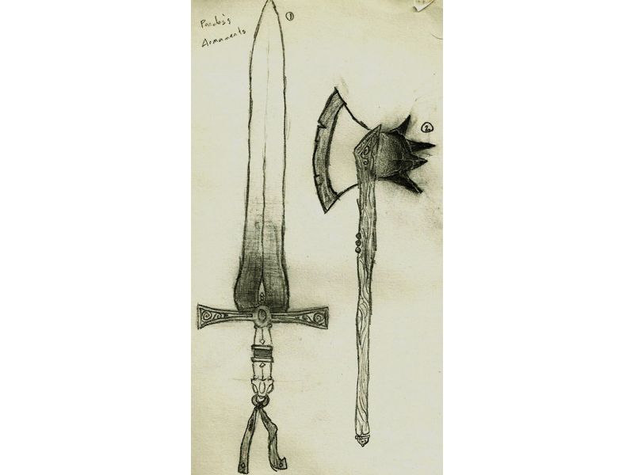
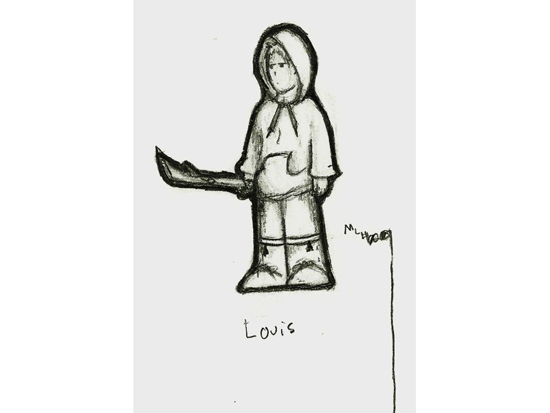
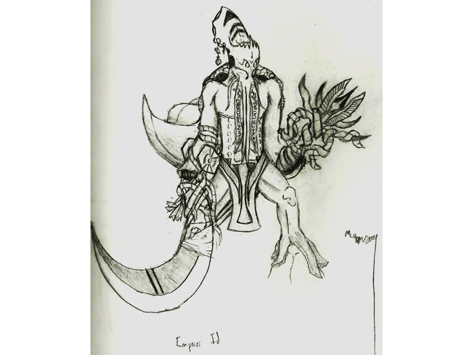
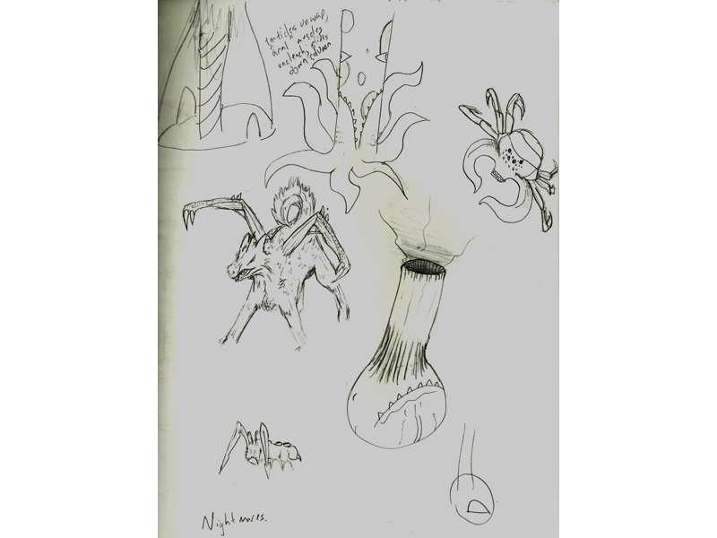
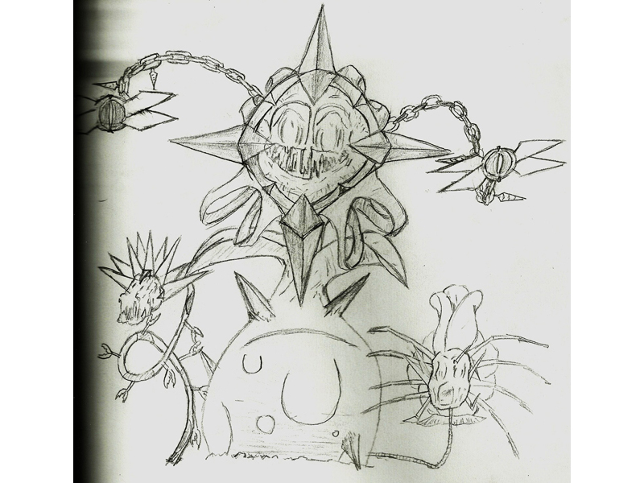

|
|
|

| Page: 1 2 3 4 |
|---|
The following is an assortment of drawings and sketches which I have created over the course of the past decade or so. Some of them I'll have plenty to say about, some of them I won't.
Like this one. I still don't know where this came from.
This is Nohlostifer; hopefully his name will start popping up a lot more. I drew him a long time ago, and he still sticks with me today. He's the main character for my huge sci-fi medieval epic idea... which I'm sure right now sounds pretty god awful, but I don't think you'll be in that mindset as soon as I get that concept up and running.
Nendavark. He -was- a part of that same medieval space epic idea... granted I've been working on that story since I was twelve, so it's definitely undergone a few changes. I probably drew this, along with the picture of Noh (Nohlostifer) 5-6 years ago.
I like how I got lazy and decided to just cut his fourth wing off.
If you were fluent in tiny handwriting, you'd be able to see that the text on the image reads "Genera vs. Resai General." Still in the medieval sci-fi epic. As of now, however, Genera cannot fly, no longer has the name 'Genera,' and is a girl. That weird sword/orb thing is a longer story.
As for the General, they're pretty much the exact same. What are they generals of? I can't really explain that here.
This kid? Yeah, still in the same story/idea/thing. Well, he was in Nohlostifer's story, not anymore. But he has an axe with a sword as the shaft. You can't help but admit how badass that is.
Pondus's armaments? Yeah they're from the space knight quest. But look at these things; it's like a dagger and a hatchet. Compared to the rest of the weapons everyone's been swinging about they're mincemeat. No wonder Pondus was cut out of the story too.
.jpg)
This is the last image I could find in regaurds to the "Space Knight Story." and lt's pretty recent. It's still in the story.
"But it's so small! What about the weapons in the previous picture?" You might ask. Well that's a good question. Those weapons didn't travel through time.
I know, it gets hokier and hokier with each image.
My concept sketch for Louis in MLH. It's basically a younger version of me with a stick.And short red hair. And green eyes. But you can't tell that from the picture can you?
Original Alleceste. Sweet, man.
Some nightmare sketches. Notice the tentaclely thing in the top-right corner; this is supposed to be a very enviroment-based boss. It starts at the top of some sort of architectural column, out of sight, with its tentacles wrapped all the way down beneath it, demonstrated by the sketch right next to the creature. When provoked, the thing unwraps its tentacles and slides down the column to ground level. Pretty cool.
That wolf thing kind of just swipes at you with those insect arms of his. Very quicky.
And while we're on the note of creature dynamics, the... er... scrotum-looking one just kind of bounces around, eats what it can find, and shoots it at you. *shiver* Now that's a real nightmare.
Another possible nightmarish boss for MLH. Apparently Louis has some pretty extreme botanophobia. At least, I think that's a plant.
I should know, I drew it right? I scare me sometimes.
 |
 |
|---|